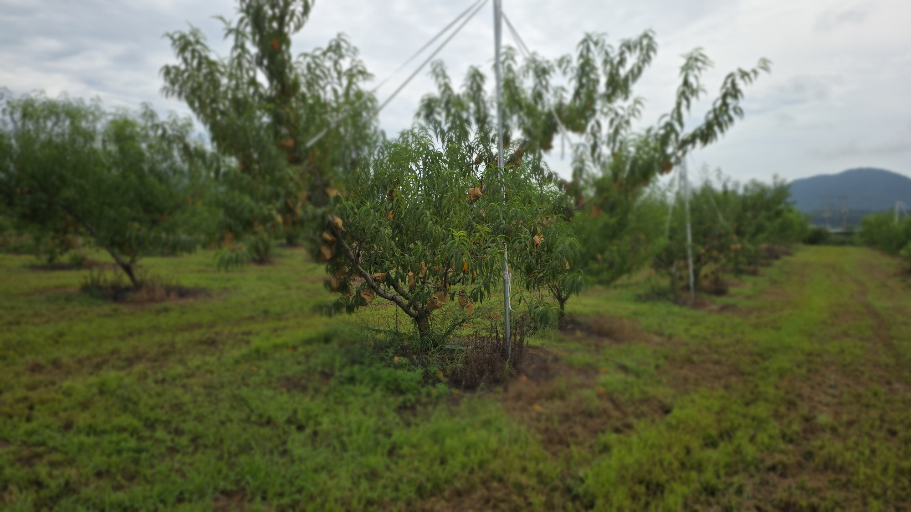

Grown with care.
Developed beyond the harvest.
Blueberries and peaches connect our cultivation experience with fresh produce distribution and processed fruit products.

Our fruit, from the beginning.
We grow blueberries in Hwasun and manage the crop through cultivation, harvest and selection. The fruit is supplied fresh and used in processed products, including freeze-dried blueberry chips and powders.
Blueberry products
Seola and Golden peaches.
Our peach business includes Seola and Golden peaches, with orchard operations in Hwasun and Icheon. Harvest and supply schedules vary by variety and growing conditions.
Our peach range also extends into freeze-dried chips and powders.
Peach products
Attention from the crop to the pack.
Orchard management, fruit checks, sorting and protective packaging connect cultivation with the product buyers receive.
Production infrastructure
A broader fruit portfolio.
Our blueberry and peach raw materials are complemented by purchased strawberry and mandarin ingredients. Freeze-drying and milling extend the range into shelf-stable chips and powders.
Explore the fruit range